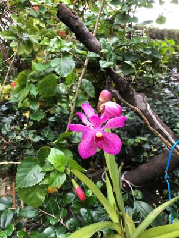

うるがいの話 ある日
最新: 魚汁【うるがいの話 ある日】とは 一日だけのプログです
『うるがいの話』の最新一日だけのプログで、通信料が少なく経済的だ。カニの画像をクリックすると全ての日付が載る『うるがいの話』サイトを表示します
|
|
【うるがいの話】 うるがい(ｳﾙｶﾞｲ urugai)とは、『もずくがに』の名前でとても大きくなります。 |
|---|---|
|
|
【カミマヤーの話】 猫のことを方言でマヤーといいます。カミマヤー（kamimayaa）とは、神の猫のことです。 |
|
【たながぁの音楽】 たながぁ（ﾀﾅｶﾞｰ tanagaa）とは手長えびのことで、何種類かあり大きいのは車 エビぐらいになります。 |

|
【ぶながぁの話】 ぶながぁ(ﾌﾞﾅｶﾞｰ bunagaa)とは、赤い髪の毛、赤い身体、そして身長は１ｍ２０ｃｍ ぐらい、川の蟹を食べているの目撃された。場所は沖縄県国頭郡大宜味村のと ある村僕の隣近所に住んでいる爺さんから、聞いた話です。 |
|
|
【ギーマの話】 ギーマ(giima)とは、山原の里山に咲くスズランに似た、 花を付けます。実は食べられます、 気が付くと口の周りが紫になっています。 |
2022年12月03日 (土）魚汁
16:46

昨日の昼、泊魚市で真鯛のアラ（養殖、７８０円）を使って、久々に魚汁を作
った。いつもは、水道の水を直接使うのだが、ペットボトルの２リットル水を
丸ごと入れた。失敗、水が多すぎで味が薄い。ヨメが、だしの素を３袋ほど入
れ込む、・・・、当たり前だが味の素の味がして余り美味しくない。仕方なく
昨日の夜、今日の朝、昼と汁を飲む。だんだん、本来の味が復活してくる。明
日まで、魚汁を頂くのだろう。腐っても鯛というが、養殖だが美味い。予報通
りに雨である。今日が、ナハマラソンだったら大変だったろう。コドモは明日
走る予定だ、開会式は難儀なので行かないでもいいとアドバイスしたが、荷物
を預けたくないので、今日ゼッケンを取りに行くと言っていっていた、晴れて
も混雑して大変なのに、雨だと・・・ナハマラソンを引退した人は思うのであ
る。

１６時４２分 ビットコインの総資産 ￥６、６２６（↓４０）